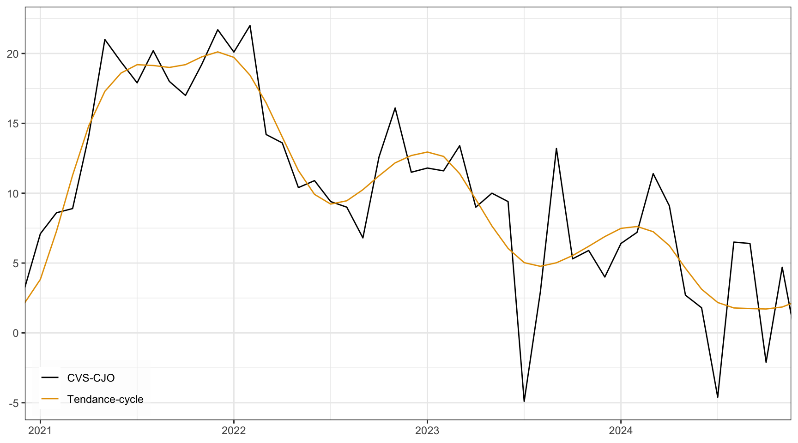
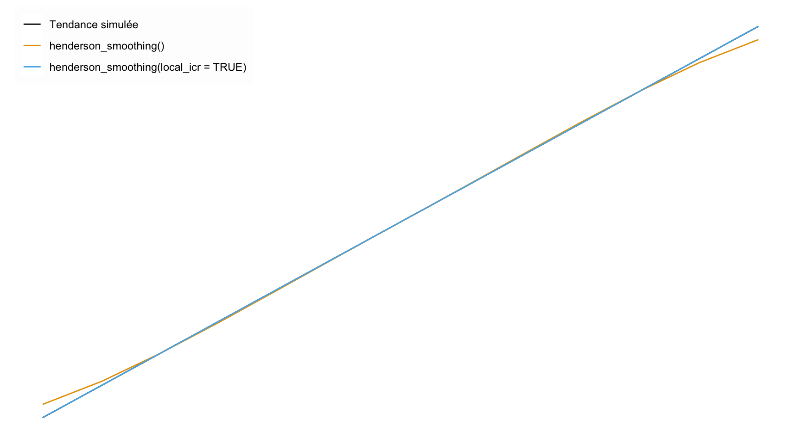
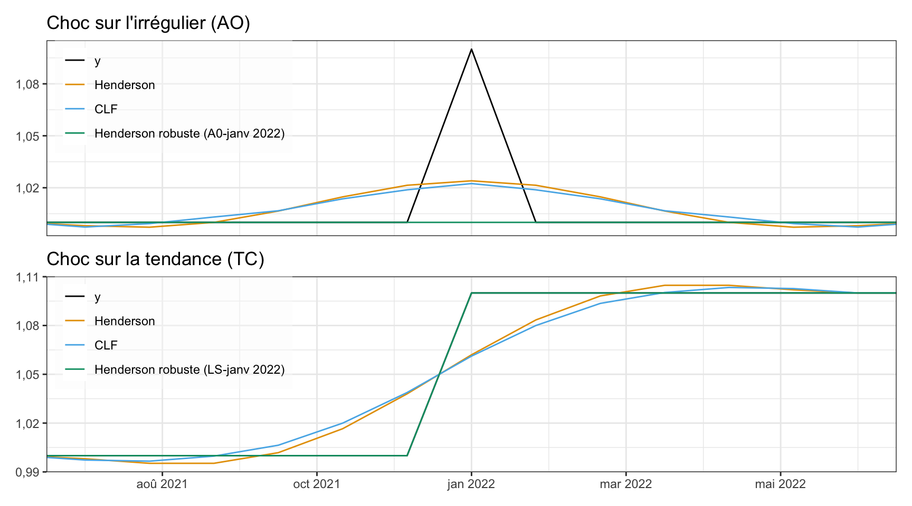
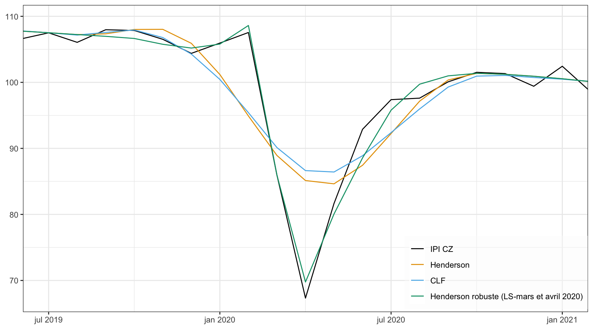
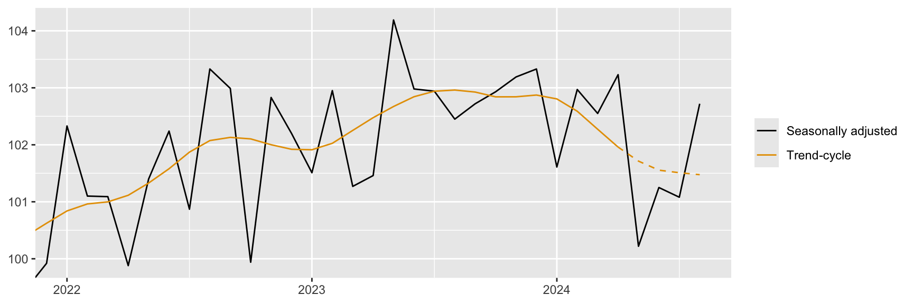
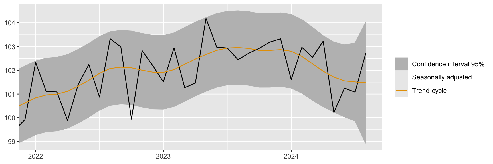
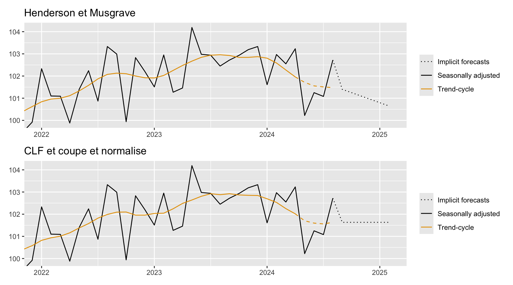
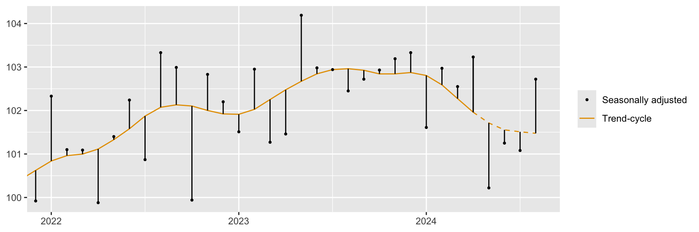
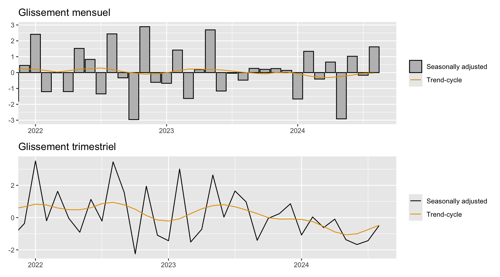

Et si l’on publiait la tendance-cycle ?
Alain QUARTIER-LA-TENTE ![]()
Résumé
Il est commun de désaisonnaliser des séries économiques pour étudier la conjoncture et déterminer l’état du cycle dans lequel se trouve l’économie. Toutefois, lorsqu’elles sont trop bruitées, un lissage supplémentaire est nécessaire pour supprimer l’irrégulier et extraire la tendance de court terme, appelée tendance-cycle, qui combine la tendance de long terme et les fluctuations cycliques de court terme. Cet article décrit l’intérêt de publier cette composante tendance-cycle, les méthodes utilisées par Statistique Canada et l’Australian Bureau of Statistic (les deux seuls instituts à publier cette composante) ainsi que deux extensions permettant de réduire le biais des estimations en temps réel et de prendre directement en compte l’impact de points atypiques afin d’éviter qu’ils ne biaisent l’estimation. Cet article détaille également des recommandations de présentation de cette composante et comment facilement mettre en production son estimation grâce à des rapports automatisés. Ces derniers sont appliqués à une dizaine de publications de l’Insee (environ 80 séries).
Cette étude est accompagné d’un package R, publishTC, permettant de facilement mettre en œuvre toutes les méthodes et recommandations. Elle est également entièrement reproductible et tous les codes utilisés sont disponibles sous https://github.com/AQLT/publishTC.wp.
Mots clés : séries temporelles, tendance-cycle, désaisonnalisation, points de retournement.
Abstract
It is common practice to seasonally adjust economic series in order to study business outlook and determine the state of the cycle at which the economy stands. However, when they are too noisy, additional smoothing is required to remove the irregularity and extract the short-term trend, known as the trend-cycle, which combines the long-term trend and short-term cyclical fluctuations. This article describes the advantages of publishing this trend-cycle component, the methods used by Statistics Canada and the Australian Bureau of Statistics (the only two institutes to publish this component) as well as two extensions that reduce the bias of real-time estimates and take direct account of the impact of atypical points to prevent them from biasing estimates. This article also describes recommendations for the presentation of this component and how to put it into production using automated reports. These, by applying it to a dozen INSEE publications (around 80 series).
This study is accompanied by an R package, publishTC, making it easy to implement all the methods and recommendations. It is fully reproducible and all the codes used are available under https://github.com/AQLT/publishTC.wp.
Keywords: time series, trend-cycle, seasonal adjustment, turning points.
JEL Classification: C22, E32.
1 Introduction
Dans les instituts nationaux de statistiques, il est courant de publier des séries chronologiques corrigées des variations saisonnières (CVS) et des jours ouvrables (CJO). Cela permet aux utilisateurs d’interpréter et de comparer plus facilement les évolutions des séries au cours du temps. Les méthodes de désaisonnalisation décomposent les séries chronologiques en trois composantes : la saisonnalité (y compris les effets de calendrier), la tendance-cycle et l’irrégulier. Les effets saisonniers représentent les variations régulières dans les données qui se manifestent durant le même mois ou le même trimestre chaque année ; la tendance-cycle représente la tendance de court-terme, c’est-à-dire l’estimation conjointe de la tendance de long-terme et des variations, de court-terme, du cycle conjoncturel ; l’irrégulier représente les fluctuations inattendues qui ne font pas partie des composantes précédentes (grèves, conditions météorologiques inhabituelles, erreurs de mesures liées à l’échantillonnage…). Par construction, la désaisonnalisation n’élimine donc pas l’effet des évènements irrégulier : lorsque celui-ci est important, il se peut donc que la série CVS-CJO ne soit pas lisse ou soit difficile à analyser.
Le calcul et la publication de la tendance-cycle présente plusieurs avantages. pour enrichir l’analyse de la conjoncture économique, notamment une meilleure lecture du cycle conjoncturel classique (également appelé cycle des affaires) et des points de retournement associés1 (Fonds monétaire international 2017, ; Menezes et al. 2006, ; Huot et Chhab 1989, ; Australian Bureau of Statistics 2001). En estimant la tendance de court-terme (tendance de long terme plus cycle conjoncturel) C’est également la composante à privilégier pour effectuer des prévisions à long-terme. Pourtant, seuls quelques instituts statistiques, comme Statistique Canada ou l’Australian Bureau of Statistics (ABS), diffusent régulièrement cette composante.
Cette étude explique l’intérêt de publier la composante tendance-cycle et les recommandations pour le faire. Elle présente également les méthodes, basées sur des moyennes mobiles, utilisées par Statistique Canada et l’Australian Bureau of Statistics. Elle montre comment ces méthodes peuvent être étendues pour :
Réduire le biais des estimations intermédiaires, notamment autour de points de retournement ;
Modéliser les points atypiques afin d’éviter qu’ils biaisent l’estimation de la tendance-cycle.
L’étude s’accompagne d’un package R, publishTC (https://github.com/AQLT/publishTC), qui facilite la mise en œuvre et la comparaison de ces méthodes. Elle explique également comment mettre en place une production automatique de cette composante, l’appliquant à une dizaine de publications de l’Insee (https://aqlt.github.io/publishTC.wp/).
L’ensemble des codes étant librement publié, cette étude est entièrement reproductible.
2 Qu’est-ce que la composante tendance-cycle, pourquoi l’estimer et la publier ?
Dans le cadre de l’analyse des séries temporelles, il est courant de supposer que la série chronologique observée, \(y_t\), peut être décomposée en une composante saisonnalité (y.c. effets de calendrier), \(S_t\), une composante tendance-cycle, \(TC_t\), et une composante erratique \(\varepsilon_t\) (appelée composante irrégulière) : \[ f(y_t)=S_t+TC_t+\varepsilon_t, \] où \(f\) désigne une transformation appropriée (généralement logarithmique ou aucune transformation). Il est courant de publier des séries corrigées des variations saisonnières (CVS) et corrigées des jours ouvrables (CJO) : les séries CVS-CJO sont donc composées de la tendance-cycle et de l’irrégulier. Pour simplifier les notations ultérieures, \(y_t\) désignera la série observée transformée et, puisque l’on s’intéresse à l’estimation de la tendance-cycle, on considérera la série désaisonnalisée ou sans saisonnalité (\(S_t=0\))2 : \[ y_t=TC_t+\varepsilon_t. \] La composante de bruit \(\varepsilon_t\) est généralement supposée être un bruit blanc. \(TC_t\) représente l’effet combiné de la tendance (variations sur une longue période) et du cycle (mouvements cycliques superposés à la tendance à long terme), estimés ici conjointement et appelé tendance-cycle \(TC_t\). Par construction, l’estimation de la composante tendance-cycle permet faciliter l’analyse des retournements conjoncturels dans le cycle classique (également appelé cycle des affaires)3. On parle de point de retournement lorsque l’on passe d’une phase de récession (diminutions successives) à une phase d’expansion de l’économie (augmentations successives) : on parle alors de redressement ou, dans le cas contraire, de ralentissement. Même si plusieurs formules peuvent être utilisées pour définir ces phases, la définition de Zellner, Hong, et Min (1991) est généralement utilisée, dans le cadre de l’estimation de tendance-cycle, pour déterminer les points de retournement : il y a un point de retournement à la date \(t\) lorsque \(TC_{t-3}\geq TC_{t-2}\geq TC_{t-1}<TC_t\leq TC_{t+1}\) (redressement) ou \(TC_{t-3}\leq TC_{t-2}\leq TC_{t-1}>TC_t\geq TC_{t+1}\) (ralentissement).
La majorité des instituts nationaux de statistique publient des séries CVS-CJO et c’est cette série qui est utilisée pour effectuer de l’analyse conjoncturelle et structurelle, effectuer des prévisions, étudier les points de retournement, etc. Toutefois, lorsque l’irrégulier est important, sa présence peut perturber l’analyse dans certains cas d’usage (comme l’analyse de la direction sous-jacente de la série ou la détection de points de retournements) : l’étude de la tendance-cycle parait alors plus appropriée car tous les effets saisonniers et irréguliers sont éliminés de la série originale. L’Autorité statistique du Royaume-Uni (United Kingdom Statistics Authority) considérait par exemple que les utilisateurs de l’indice de ventes au détail accordaient trop d’importances aux variations mensuelles de la série CVS-CJO car en période de forte volatilité cela ne donnait pas une bonne indication de la tendance de long terme (Office for Statistics Regulation 2008).
La figure 1 montre le solde d’opinion CVS-CJO de la tendance prévue de la production dans l’industrie manufacturière (série 001586103), entre 2021 et 2025, publié par l’Insee en mai 2025 ainsi qu’une estimation de la tendance-cycle estimée par la moyenne mobile de Henderson de 13 termes (voir section 3). La série CVS-CJO est erratique et il parait donc difficile d’analyser les évolutions du solde d’opinion et de distinguer ce qui provient ou non de l’irrégulier. La tendance-cycle est, par construction, plus lisse et la direction sous-jacente est clairement lisible.
Comme le montre cet exemple, il y a donc un intérêt à publier la tendance-cycle, en complément et non en remplacer des séries CVS-CJO, pour enrichir l’analyse de la conjoncture économique. Ainsi, la composante tendance-cycle est à privilégier pour l’analyse du cycle conjoncturel, la détection des points de retournements et les prévisions à long-terme (Fonds monétaire international 2017). En particulier, par rapport à la série CVS-CJO, la tendance-cycle permet une estimation plus rapide du point de retournement mais avec le risque de détecter des faux points de retournement (Menezes et al. 2006). Naturellement, l’intérêt de publier la tendance-cycle sera d’autant plus grand que la série est bruitée (i.e., l’irrégulier est important).
Pour la prévision de court terme, la série désaisonnalisée peut être privilégiée, notamment si l’analyse de l’irrégulier est importante (Australian Bureau of Statistics 2001). C’est notamment le cas lorsque les évolutions de la composante irrégulières peuvent être associées à des évènements économiques ou des mesures politiques et a donc un intérêt pour le conjoncturiste.
En somme, comme notamment indiqué par McLaren et Zhang (2010), les trois principales raisons de calculer et publier la tendance-cycle, en plus de la série désaisonnalisée, sont :
Réduire le risque que les utilisateurs tirent des conclusions inappropriées sur la base de mouvements liés à l’irrégulier.
Permettre une comparaison appropriée dans le temps en réduisant l’impact des évènements ponctuels.
Améliorer la compréhension et la détection des points de retournement.
3 Comment estimer une tendance-cycle ?
Il existe de très nombreuses façons de modéliser et d’estimer la tendance-cycle, voir notamment Alexandrov et al. (2012) pour une revue des méthodes. Toutefois, les seuls instituts statistiques qui diffusent régulière cette composante (Statistique Canada et l’Australian Bureau of Statistics (ABS)), utilisent des moyennes mobiles avec une méthodologie similaire à celle utilisée dans la méthode de désaisonnalisation X-13ARIMA-SEATS.
Une moyenne mobile \(M_{\boldsymbol\theta}\) est un opérateur linéaire défini par un ensemble de coefficients \(\boldsymbol \theta=(\theta_{-p},\dots,\theta_{f})'\) qui transforme toute série temporelle \(X_t\) en : \[ M_{\boldsymbol\theta}(X_t)=\sum_{k=-p}^{+f}\theta_kX_{t+k}. \] La quantité \(p+f+1\) est appelée ordre de la moyenne mobile. Lorsque \(p=f\) la moyenne mobile est dite centrée. Si de plus on a \(\forall k:\:\theta_{-k} = \theta_k\), la moyenne mobile \(M_{\boldsymbol\theta}\) est dite symétrique. Dans ce cas, la quantité \(p=f\) est appelée fenêtre (bandwidth).
Dans cette section nous décrivons les moyennes mobiles utilisées par Statistique Canada et ABS ainsi que deux extensions possibles. Voir notamment Quartier-la-Tente (2024a) pour une description plus complète des méthodes récentes de construction de moyennes mobiles pour l’estimation de la tendance-cycle.
Dans le cadre de l’estimation par moyenne mobile, la composante tendance-cycle est estimée de manière locale. Autour d’un voisinage \(h\) de \(t\), cette composante peut être approximée localement par un polynôme de degré \(d\) : \[ TC_{t+i} = \sum_{j=0}^d\beta_j{i}^j+\xi_{t+i}\quad\forall i\in\{-h,-h+1,\dots,t+h\} \] avec \(\xi_t\) un processus stochastique non corrélé avec \(\varepsilon_t\) représentant l’erreur d’approximation. Même si certains articles modélisent \(\xi_t\) et \(\varepsilon_t\) séparément (voir par exemple Gray et Thomson 2002), une hypothèse habituelle, est de rassembler \(\xi_t\) et \(\varepsilon_t\)4. Ainsi, la tendance-cycle \(TC_t\) est considérée comme déterministe et modélisée localement comme une tendance polynomiale de degré \(d\). Les coefficients \((\beta_0,\dots,\beta_d)\) peuvent être estimés par la méthode des moindres carrés pondérés. L’estimation \(\hat \beta_0\) fournit l’estimation de \(\widehat{TC}_t\) et on peut montrer que cela équivaut à appliquer une moyenne mobile (voir notamment Proietti et Luati 2008). Cette moyenne mobile est généralement symétrique (\(\widehat{TC}_t\) est estimée en utilisant autant d’observations avant et après \(t\)) mais pour l’estimation des derniers points (lorsque l’on ne peut pas utiliser autant d’observations avant et après \(t\)) il est nécessaire de s’appuyer sur des moyennes mobiles ad hoc qui sont asymétriques.
3.1 Moyenne mobile de Henderson et de Musgrave
Pour l’extraction de la tendance-cycle, le moyenne symétrique la plus connue est celle de Henderson (1916). Elle est notamment utilisée dans l’algorithme de désaisonnalisation X-13ARIMA-SEATS. C’est également la moyenne mobile utilisée par ABS pour obtenir l’estimation finale de la tendance-cycle (Australian Bureau of Statistics 2003). Notons \(h\) la fenêtre de la moyenne mobile d’Henderson, c’est-à-dire que pour estimer la tendance-cycle à la date \(t\) (\(h\) points avant et après \(t\) sont utilisés) : la longueur de la moyenne mobile est donc \(2h+1\). Les coefficients de la moyenne mobile d’Henderson d’ordre \(h\) sont donnés par : \[ \theta^H_{k} = \frac{315\left\lbrack \left( n - 1 \right)^{2} - k^{2} \right\rbrack\left\lbrack n^{2} - k^{2} \right\rbrack\left\lbrack \left( n + 1 \right)^{2} - k^{2} \right\rbrack\left\lbrack {3n}^{2} - 16 - 11k^{2} \right\rbrack}{8n\left( n^{2} - 1 \right)\left( {4n}^{2} - 1 \right)\left( {4n}^{2} - 9 \right)\left( 4n^{2} - 25 \right)} \text{ avec }n=h+2. \]
Comme montré par Proietti et Luati (2008), celle-ci peut être obtenue en modélisant localement une tendance de degré 2 (\(d=2\)) et en utilisant les noyaux : \[ \kappa_{j}=\left[1-\frac{j^2}{(h+1)^2}\right] \left[1-\frac{j^2}{(h+2)^2}\right] \left[1-\frac{j^2}{(h+3)^2}\right]. \] Cette moyenne mobile étant symétrique et préservant les tendances de degré 2, elle préserve également les tendances de degré 3 et peut, de manière équivalente, être obtenue en modélisant localement une tendance de degré 3 (\(d=3\)).
Dans X-13-ARIMA-SEATS, permettant de désaisonnaliser des séries qui sont au plus mensuelles, la longueur de la moyenne mobile (i.e., le paramètre \(h\) déterminant le nombre de points utilisés pour l’estimation de la tendance-cycle) est déterminée à partir de l’I/C ratio, noté \(R\), défini par : \[ R=\frac{\bar{I}}{\bar{C}}=\frac{\sum\lvert I_t-I_{t-1}\rvert}{\sum\lvert TC_t-TC_{t-1}\rvert}, \] où \(I_t\) est l’irrégulier et \(TC_t\) la tendance-cycle. Le calcul de ce ratio nécessite de disposer d’une estimation de la tendance-cycle : en notant \(s\) la fréquence de la série (\(s=12\) pour une série mensuelle, \(s=4\) pour une série trimestrielle…), une première estimation de la tendance-cycle est effectuée à partir d’une moyenne mobile de Henderson de longueur \(s+1\) (13 termes pour une série mensuelle donc \(h=6\), 5 termes pour série trimestrielle donc\(h=2\)…). La longueur retenue par X-13-ARIMA-SEATS est ensuite déterminée en fonction de la valeur du ratio \(R\) et de la fréquence de la série :
Pour les séries trimestrielles (\(s=4\)), la moyenne mobile de Henderson est de 5 termes si le ratio est petit (\(R<3,5/3\), majorité des cas) et de 7 termes sinon ;
Pour les séries mensuelles (\(s=12\)), la moyenne mobile de Henderson est de 9 termes si le ratio est petit (\(R<1\)), 23 termes si le ratio est grand (\(3,5<R\)) et 13 termes sinon (majorité des cas).
Pour l’estimation en temps réel, les moyennes mobiles utilisées dans X-13-ARIMA-SEATS sont celle de Musgrave (1964). Comme montré par Proietti et Luati (2008), ces moyennes mobiles peuvent également s’obtenir par approximation polynomiale locale en supposant en fin de période que la tendance-cycle est linéaire (\(d=1\)) : \[ y_t=\beta_0+\delta t+\varepsilon_t, \quad\varepsilon_t\sim \mathcal N(0,\sigma^2). \] Les coefficients de la moyenne mobile de Musgrave sont alors obtenus en faisant un compromis biais-variance : la moyenne mobile asymétrique minimise l’erreur quadratique moyenne de révision (au filtre symétrique de Henderson), sous la contrainte de préserve sans biais les constantes (il y a donc un biais dans l’estimation de la pente). Ces moyennes mobiles dépendent du rapport \(|\delta/\sigma|\) qui doit être défini par l’utilisateur. En supposant le biais \(\delta\) constant dans le temps et la tendance est linéaire, ce rapport peut être relié à l’I/C ratio \(R\) par la relation : \[ \left|\frac{\delta}{\sigma}\right|=\frac{2}{R\sqrt{\pi}}. \] Dans X-13-ARIMA-SEATS, pour la construction des moyennes mobiles de Musgrave, ce rapport est fixé de la façon suivante :
Pour les séries trimestrielles : \(R=0,001\) si une moyenne mobile de Henderson de 5 termes est utilisée (majorité des cas) et \(R=4,5\) sinon ;
Pour les séries mensuelles : \(R=0,001\) si une moyenne mobile de Henderson de 9 termes est utilisée, \(R=3,5\) pour une moyenne mobile de 13 termes (majorité des cas) et \(R=4,5\) sinon.
Pour l’estimation de la tendance-cycle, l’Australian Bureau of Statistics reproduit l’approche de X-13ARIMA-SEATS mais sans faire de détection automatique de la longueur de la série. Pour les séries mensuelles, une moyenne mobile de Henderson de 13 termes est toujours utilisée et les moyennes mobiles de Musgrave associées sont construites en utilisant le paramètre \(R=3,5\) (Trewin 2003). Cela a un avantage de simplicité : les mêmes moyennes mobiles sont utilisées pour l’ensemble des séries. Les coefficients des moyennes mobiles utilisées par ABS sont résumés dans la table 1.
| q=6 | q=5 | q=4 | q=3 | q=2 | q=1 | q=0 | |
|---|---|---|---|---|---|---|---|
| t-6 | -0,019 | -0,016 | -0,011 | -0,008 | -0,016 | -0,043 | -0,092 |
| t-5 | -0,028 | -0,026 | -0,022 | -0,020 | -0,025 | -0,039 | -0,058 |
| t-4 | 0,000 | 0,001 | 0,003 | 0,004 | 0,003 | 0,002 | 0,012 |
| t-3 | 0,065 | 0,066 | 0,066 | 0,066 | 0,068 | 0,080 | 0,120 |
| t-2 | 0,147 | 0,147 | 0,146 | 0,144 | 0,149 | 0,174 | 0,244 |
| t-1 | 0,214 | 0,213 | 0,210 | 0,208 | 0,216 | 0,254 | 0,353 |
| t | 0,240 | 0,238 | 0,233 | 0,230 | 0,241 | 0,292 | 0,421 |
| t+1 | 0,214 | 0,211 | 0,205 | 0,201 | 0,215 | 0,279 | |
| t+2 | 0,147 | 0,144 | 0,135 | 0,130 | 0,148 | ||
| t+3 | 0,065 | 0,061 | 0,051 | 0,045 | |||
| t+4 | 0,000 | -0,005 | -0,017 | ||||
| t+5 | -0,028 | -0,034 | |||||
| t+6 | -0,019 |
Cette méthode d’estimation de la tendance-cycle peut être appliquée en utilisant la fonction publishTC::henderson_smoothing(). Si la longueur de la moyenne mobile de Henderson n’est pas fixée (paramètre length = NULL, par défaut), elle est déterminée en utilisant l’algorithme de X-13ARIMA-SEATS décrit ci-dessus. Si elle est spécifiée par l’utilisateur et que l’I/C ratio n’est pas défini (paramètre icr = NULL, par défaut), alors ce dernier est également déterminé en utilisant la méthode de X-13ARIMA-SEATS.
Pour l’estimation en temps réel, supposer le biais constant et la tendance linéaire ne parait pas une hypothèse plausible. Par exemple, lors d’un retournement conjoncturel, la pente de la tendance-cycle tend vers 0 jusqu’au point de retournement. Ainsi Quartier-la-Tente (2024b) propose une méthode de paramétrisation locale des moyennes mobiles de Musgrave, implémentée dans publishTC::henderson_smoothing() en utilisant le paramètre local_icr = TRUE. Cela permet de réduire les révisions et le délai dans la détection des points de retournement, sans changer les estimations finales de la tendance-cycle (toujours estimées via une moyenne mobile de Henderson). À titre illustratif, prenant le cas extrême d’une tendance constante de degré 1 sans bruit : l’I/C ratio devrait donc être nul. L’utilisation du paramètre \(R=3,5\) conduit à des révisions dans les estimations en temps réel de la tendance-cycle alors que la paramétrisation locale permet d’obtenir des estimations en temps-réel égales aux estimations finales (figure 2).
henderson_smoothing()) ou une paramétrisation locale de l’I/C ratio (henderson_smoothing(local_icr = TRUE)).

3.2 Cascade Linear Filters (CLF)
Les moyennes mobiles étant des opérateurs linéaires, elles sont sensibles à la présence de points atypiques. Du fait de leur présence, l’application directe des méthodes peut donc conduire à des estimations biaisées alors que les méthodes de désaisonnalisation (comme la méthode X-13ARIMA-SEATS) ont un module de correction des points atypiques. Par ailleurs, comme notamment montré par Dagum (1996), le filtre symétrique final utilisé par la méthode de désaisonnalisation X-11 pour extraire la tendance-cycle (et donc celui indirectement utilisé lorsqu’on applique les méthodes sur les séries désaisonnalisées) laisse passer environ 72 % des cycles de 9 ou 10 mois (généralement associés à l’irrégulier plutôt qu’à la tendance-cycle). Les filtres asymétriques finaux amplifient même les cycles de 9 ou 10 mois. Cela peut avoir pour conséquence l’introduction d’ondulations indésirables5, c’est-à-dire la détection de faux points de retournement. Ce problème est réduit par la correction des points atypiques (ces cycles étant considérés comme de l’irrégulier). C’est ainsi que le Nonlinear Dagum Filter (NLDF) a été développé et consiste à :
appliquer l’algorithme de correction des points atypiques de X-11 sur la série désaisonnalisée, puis la prolonger par un modèle ARIMA ;
effectuer une nouvelle correction des points atypiques en utilisant un seuil bien plus strict et appliquer ensuite le filtre symétrique de 13 termes. En supposant une distribution normale cela revient à modifier 48 % des valeurs de l’irrégulier (afin d’éviter qu’ils ne biaisent l’estimation de la tendance-cycle).
Utiliser une moyenne mobile de Henderson et des prévisions obtenues à partir d’un modèle ARIMA(0,1,1) où \(\theta=0,40\) conduit à avoir une moyenne mobile de 31 termes. Les cascade linear filter (CLF, Dagum et Luati 2009), correspondent à une approximation des NLDF où l’on a tronqué la moyenne mobile afin qu’elle soit de longueur 13 et effectué une procédure spécifique de normalisation des poids (de sorte à préserver sans biais les constantes). De manière similaire, des moyennes mobiles asymétriques, Asymmetric Linear Filter (ALF), peuvent être construites.
C’est la moyenne mobile CLF qui est utilisée par Statistique Canada pour l’estimation de la tendance-cycle (Picard et Matthews 2016). Pour l’estimation en temps réel, Statistique Canada utilise la méthode « couper-et-normaliser » qui consiste à recalculer les poids, à partir de la moyenne mobile symétrique, en n’utilisant que les poids associées aux observations disponibles (couper) et en renormalisant pour que la somme des coefficients soit égale à 1 (normaliser). Les coefficients des moyennes mobiles utilisées par Statistique Canada sont résumés dans la table 2.
| q=6 | q=5 | q=4 | q=3 | q=2 | q=1 | q=0 | |
|---|---|---|---|---|---|---|---|
| t-6 | -0,027 | -0,026 | -0,026 | -0,027 | -0,029 | -0,034 | -0,044 |
| t-5 | -0,007 | -0,007 | -0,007 | -0,007 | -0,007 | -0,009 | -0,011 |
| t-4 | 0,031 | 0,030 | 0,030 | 0,031 | 0,033 | 0,039 | 0,051 |
| t-3 | 0,067 | 0,065 | 0,065 | 0,067 | 0,072 | 0,084 | 0,109 |
| t-2 | 0,136 | 0,132 | 0,132 | 0,136 | 0,145 | 0,170 | 0,222 |
| t-1 | 0,188 | 0,183 | 0,182 | 0,187 | 0,201 | 0,235 | 0,307 |
| t | 0,224 | 0,218 | 0,217 | 0,223 | 0,239 | 0,280 | 0,366 |
| t+1 | 0,188 | 0,183 | 0,182 | 0,187 | 0,201 | 0,235 | NA |
| t+2 | 0,136 | 0,132 | 0,132 | 0,136 | 0,145 | NA | NA |
| t+3 | 0,067 | 0,065 | 0,065 | 0,067 | NA | NA | NA |
| t+4 | 0,031 | 0,030 | 0,030 | NA | NA | NA | NA |
| t+5 | -0,007 | -0,007 | NA | NA | NA | NA | NA |
| t+6 | -0,027 | NA | NA | NA | NA | NA | NA |
L’inconvénient de la moyenne mobile CLF est qu’elle ne préserve localement que les droites (tendances de degré 1), contrairement à la moyenne mobile de Henderson qui préserve les tendances locales de degré 3. Même si la moyenne mobile CLF permet de réduire le nombre d’ondulations indésirables et les révisions dans les estimations intermédiaires, c’est au coût d’un biais plus important dans l’approximation d’une tendance de degré 1.
Cette méthode d’estimation de la tendance-cycle peut être appliquée en utilisant la fonction publishTC::clf_smoothing(). Par défaut, pour les moyennes mobiles asymétriques, la méthode « couper-et-normaliser » est utilisée. Les moyennes mobiles ALF peuvent être utilisées en utilisant l’option endpoints = "ALF".
3.3 Que faire en cas de rupture de tendance ?
Lors de périodes de fortes « turbulences » (comme la crise du COVID-19) où les points atypiques sont importants, les estimations directes de la tendance-cycle peuvent être biaisées. De la même façon, lorsqu’une rupture brutale de la tendance est observée, les estimations de la tendance-cycle seront biaisées. Dans ce cas, plusieurs approches sont possibles :
Ne pas publier les estimations pendant cette période : c’est ce qui est fait par l’Australian Bureau of Statistics pour la période du COVID-19 en ne publiant pas d’estimation tendance-cycle entre avril 2020 et mars 2022.
Estimer les points atypiques avec un modèle RegARIMA, estimer la tendance-cycle sur la série corrigée et « réintroduire » les effets corrigés sur la tendance-cycle. L’inconvénient de cette approche est que l’estimation des points atypiques dépend du modèle ARIMA utilisé et de la période d’estimation, ce qui complexifie la reproductibilité des résultats. Si le modèle est réestimé à chaque nouvelle observation, la tendance-cycle peut donc potentiellement être révisée pendant de nombreuses périodes. Par exemple, Ladiray et Quartier-la-Tente (2018) montrent que dans la majorité des cas il faut attendre au moins 3 ans pour que l’estimation du coefficient associé à une rupture converge. C’est l’approche privilégiée par l’Australian Bureau of Statistics lors de ruptures dans la tendance (Trewin 2003).
Estimer la tendance-cycle sur l’ensemble de la période et remplacer les données estimées après la rupture par celles estimées en commençant la série après la rupture (série segmentée d’un côté). L’inconvénient de cette approche est que les estimations juste avant la rupture vont être biaisées par la présence du choc et que celles juste après la rupture reposent sur des moyennes mobiles asymétriques (avec un biais plus important que les moyennes mobiles symétriques utilisées pour les estimations finales, et peuvent créer un déphasage, c’est-à-dire un décalage dans les points de retournement).
Diviser la série en deux au niveau de la rupture et estimer la tendance-cycle sur chaque segment (série segmentée des deux côtés). L’inconvénient de cette approche est que les estimations avant la rupture et après la rupture reposent sur des moyennes mobiles asymétriques (avec les mêmes inconvénients que précédemment). C’est l’approche privilégiée par Statistique Canada pendant le COVID-19 (Matthews 2022) et celle qui était par l’Australian Bureau of Statistics lors des premières publications des estimations de la tendance-cycle (Australian Bureau of Statistics 1987).
Une dernière approche consiste à construire des moyennes mobiles qui prennent en compte la présence d’un choc modélisé par l’utilisateur. Dans le cadre des moyennes mobiles de Henderson et de Musgrave, cela revient à ajouter un régresseur supplémentaire dans la régression et dans le cadre de la moyenne mobile CLF, cela revient à ajouter ce régresseur dans la modélisation ARIMA. C’est l’approche proposé par Quartier-la-Tente (2025) pour les moyennes mobiles de Henderson et de Musgrave : on parlera alors de « Henderson robuste » ou de « Musgrave robuste ». Elle est implémentée dans la fonction
publishTC::henderson_robust_smoothing()où :Le paramètre
aopermet de spécifier les dates des points atypiques additifs (AO, additive outlier) : un choc ponctuelle à une date particulière puis un retour à la normal (grève, mesure exceptionnelle, erreur de mesure par exemple liée à de la non réponse, etc.). Le choc affecte donc l’irrégulier et ne devrait pas avoir d’impact sur la tendance-cycle.Le paramètre
lspermet de spécifier les dates des ruptures en niveau (LS, level shift) : un changement soudain et durable du niveau moyen de la série (choc structurel, changement de politique économique, etc.). Le choc affecte donc la tendance-cycle et ne devrait pas avoir d’impact sur l’irrégulier.
C’est cette dernière approche que nous recommandons de faire : comme montré dans Quartier-la-Tente (2025), cela permet de minimiser les révisions dans les estimations intermédiaires, de correctement modéliser les retournements conjoncturels et de mieux contrôler les corrections faites. Cette approche facilite également la reproductibilité des estimations puisqu’il suffit de communiquer sur les ruptures modélisés. Comme toutes les approches, la construction des moyennes mobiles « robustes » nécessite de connaître la date et la nature du choc : sans information extérieur, la détection des chocs peut se faire via des modules ad-hoc comme le module de pré-ajustement de X-13ARIMA-SEATS basé sur la modélisation ARIMA. C’est ce qui est implémenté dans la fonction publishTC::x13_regarima_outliers(). Puisque cela a un impact important sur la série publiée, il est préférable de confronter les choix d’algorithmes automatiques aux connaissances économiques de la série.
La figure 3 montre les estimations de la tendance-cycle sur des séries simulées avec une tendance nulle et un choc ponctuel sur l’irrégulier ou un choc permanent sur la tendance en janvier 2022. Autour du choc, les moyennes mobiles de Henderson et CLF conduisent à des estimations biaisées et, dans le cas du choc sur la tendance-cycle, à considérer une augmentation de la tendance bien plusieurs mois avant le choc et le niveau est sous-estimé après le choc. Au contraire, l’utilisation de moyenne mobiles robustes à ces chocs permet de bien prendre en compte la nature des chocs et leur influence sur la tendance-cycle.
La figure 4 montre les estimations de la tendance-cycle sur l’indice de production industrielle (IPI) dans l’industrie manufacturière durant la période du COVID-19. Sur cette période, la propriété souhaitée par la tendance-cycle publiée est de reproduire les points de retournement conjoncturel à la bonne date : un pic en février 2020 et un creux en mars 2020. Seule l’utilisation de moyennes mobiles robustes à deux chocs en niveau en mars et avril 2020 permet de reproduire ce phénomène économique.


3.4 Quelle méthode choisir ?
Une critique classique des estimations de la tendance-cycle (et de manière plus générale des méthodes de décomposition) est qu’elles ne sont pas définies de manière unique et qu’il n’y a donc pas de définition unique et acceptée par tous. Les critères classiquement utilisés dans la littérature afin de comparer les méthodes d’estimations de la tendance-cycle (voir par exemple Martı́n et al. 2009, ; Picard et Matthews 2016, ; Dagum et Bianconcini 2023) sont :
Les révisions entre la première et la dernière estimation.
Le nombre de mois nécessaire pour détecter les points de retournement.
Le nombre d’ondulations indésirables, en parlant d’ondulation indésirable lorsque deux points de retournement se produisent en moins de dix mois.
Toutefois, plusieurs critiques peuvent être faites à ces critères :
Comme notamment montré dans Quartier-la-Tente (2024a), il est utile d’étudier à la fois les révisions entre deux estimations consécutives ainsi que les révisions entre toutes les estimations intermédiaires et la dernière estimation. Cela permet de mettre en évidence des sous-optimalités dans certaines méthodes pour les moyennes mobiles asymétriques utilisées lorsque plusieurs points dans le futur sont connus. De la même façon, pour l’analyse du délai dans la détection des points de retournement, il est préférable de calculer le nombre de mois nécessaires pour détecter le bon point de retournement sans aucune révision future. Cela permet d’éviter des cas où le point de retournement est détecté par des filtres asymétriques mais ne l’est pas avec l’estimation finale avec un filtre symétrique.
Plus la tendance-cycle sera lisse, plus les révisions et le nombre de points de retournements détectés seront faibles. Dès lors, le nombre d’ondulations indésirables sera donc réduit6. C’est notamment le cas lorsque l’on compare le filtre CLF à la moyenne mobile de Henderson : la première moyenne mobile modélisant une tendance locale de degré 1 (contrairement à une tendance locale de degré 3 pour la seconde), elle conduira à des estimations plus lisses moins révisées et avec moins d’ondulations indésirables.
La comparaison de deux méthodes utilisant des moyennes mobiles symétriques différentes (comme Henderson et CLF) peut être perturbée par le fait que les points de retournement peuvent être détectés à des dates différentes. Par ailleurs, la définition utilisée pour qualifier les oscillations indésirables (deux points de retournement en moins de 10 mois) ne permet pas de prendre en compte les faux points de retournement et les périodes du type COVID-19 (où deux points de retournement apparaissent en moins de 10 mois). Il est donc préférable d’avoir une analyse approfondie des séries étudiées afin de connaitre les points de retournement à détecter et ainsi en déduire les faux points de retournement.
Par cohérence et transparence envers les utilisateurs des données, nous recommandons d’utiliser la même méthode d’estimation pour l’ensemble des séries. Nous recommandons de faire le choix de celle-ci en se basant sur la réalité économique que l’on souhaite représenter. Parmi les méthodes présentées dans cet article, ce sont les moyennes mobiles robustes de Henderson qui semblent le mieux satisfaire ces critères puisque la prise en compte des points atypiques, directement dans la méthode d’estimation, permet de correctement modéliser les pics et les creux associés aux grandes crises économiques (notamment crise financière de 2009 et la crise du COVID-19).
4 Recommandations de présentation de la tendance-cycle
Cette section décrit les principales recommandations concernant la publication et la présentation de la tendance-cycle. Ces différentes recommandations seront illustrées avec l’estimation de la tendance-cycle de l’IPI dans l’industrie manufacturière à partir de la moyenne mobile d’Henderson de 13 termes et des moyennes mobiles de Musgrave avec \(R=3,5\) (comme ce qui est effectué par ABS). Cette estimation se fait via le code :
library(publishTC)
tc_h <- henderson_smoothing(french_ipi[, "manufacturing"], length = 13)La principale recommandation de présentation est que la tendance-cycle doit être présentée conjointement avec la série désaisonnalisée (Australian Bureau of Statistics 2008, ; Martı́n et al. 2009, ; McLaren et Zhang 2010, ; Fonds monétaire international 2017). Cela permet aux utilisateurs de clairement discerner l’ampleur et le signe de l’irrégulier (par différenciation) et les confronter à sa propre connaissance de l’activité économique (Australian Bureau of Statistics 1987).
4.1 Refléter l’incertitude des dernières estimations
La principale critique des estimations de la tendance-cycle est l’ampleur des révisions : mêmes si celles-ci sont finalement moins importantes que celles de la séries CVS-CJO, elles sont concentrées sur les 3 premières estimations. De nombreux auteurs s’accordent donc à recommander que la présentation des estimations de la tendance-cycle doit mettre en lumière le moindre degré de fiabilité de la tendance-cycle sur les dernières observations (Huot et Chhab 1989, ; Kenny et Durbin 1982, ; Fonds monétaire international 2017). Il faut en particulier être prudent sur l’analyse des points de retournement sur les dernières périodes (lorsque l’estimation n’est pas définitive, Australian Bureau of Statistics 1987, ; Australian Bureau of Statistics 2008, ; McLaren et Zhang 2010). La façon la plus simple de mettre en œuvre cette recommandation est de mettre les dernières estimations de la tendance-cycle en pointillé. ABS ne met pas en œuvre cette recommandation mais Statistique Canada ajoute l’avertissement « La plus grande variabilité associée aux estimations de la tendance-cycle est indiquée au moyen d’une ligne pointillée dans le graphique pour le mois de référence en cours et pour les trois mois précédents ».
Dans publishTC, la tendance-cycle peut être représentée conjointement avec la série désaisonnalisée en utilisant les fonctions plot() et ggplot2::autoplot(). Par défaut, les quatre dernières estimations de la tendance-cycle sont en pointillés (comme dans les publications de Statistique Canada). Ces pointillés peuvent être supprimés en utilisant le paramètre n_last_tc = 0. En reprenant notre exemple :
library(ggplot2)
# On commence le graphique en 2022 :
autoplot(tc_h, xlim = c(2022, NA))
Martı́n et al. (2009) recommandent que le nombre de mois en pointillés soit déterminé par la statistique MCD (month of cyclical dominance) qui est le nombre de mois ou de trimestres nécessaires pour que la variation moyenne absolue de la tendance-cycle soit supérieure à celle de l’irrégulier. Pour une série mensuelle, notons : \[
R_k=\frac{\bar{I_k}}{\bar{C_k}}=\frac{\sum\lvert I_t-I_{t-k}\rvert}{\sum\lvert TC_t-TC_{t-k}\rvert}\text{ pour }k\in\{1,2,\dots, 12\}.
\] L’ampleur de la tendance-cycle tend à augmenter avec la durée alors que la variation de la composante irrégulière devrait être constante : \(R_k\) devrait donc être décroissante. La statistique MCD est le premier délai \(d\) pour lequel tous les ratios \((R_k)_{k\geq d}\) sont inférieurs à 1 : il s’agit donc du nombre de mois pour que la composante tendance-cycle devienne dominante par rapport à la composante irrégulière. Elle peut être calculée en utilisant la fonction publishTC::mcd() et la recommandation de Martı́n et al. (2009) peut être appliquée en utilisant le paramètre n_last_tc = NULL. Dans notre exemple, cette valeur est de 4 mois :
mcd(tc_h)[1] 4L’incertitude autour des dernières estimations de la tendance-cycle peut aussi être reflétée en construisant des intervalles de confiance (section 4.1.1) ou en calculant les prévisions implicites associées aux estimations en temps réel (section 4.1.2).
4.1.1 Construction des intervalles de confiance
Il est possible de construire des intervalles de confiance pour l’estimation de la tendance-cycle par des moyennes mobile en prenant l’analogie entre le lissage par une moyenne mobile et la régression locale (Quartier-la-Tente 2025). Ces intervalles sont directement calculables via la fonction confint() et ils peuvent être tracés à partir des fonctions publishTC::confint_plot() et publishTC::ggconfint_plot().
ggconfint_plot(tc_h, xlim = c(2022, NA))
L’inconvénient de cette représentation est qu’elle peut laisser croire qu’il n’y a pas d’incertitude autour des estimations de la série brute ou désaisonnalisée.
4.1.2 Construction des prévisions implicites
Afin de juger de la qualité des estimations en temps réel de la tendance-cycle et d’anticiper les futures révisions, il est possible de calculer les prévisions implicites associées à l’utilisation d’une moyenne mobile asymétrique (Quartier-la-Tente 2024b).
Notons \(\boldsymbol v=(v_{-h},\dots, v_{h})\) la moyenne mobile symétrique utilisée pour calculer les estimations finales et \(\boldsymbol w^0,\dots, \boldsymbol w^{h-1}\) les moyennes mobiles asymétriques utilisées pour les estimations intermédiaires. \(\boldsymbol w^0=(w_{-h}^0, \dots, w_{0}^0)\) est utilisée pour les estimations en temps-réel (lorsque 0 point dans le futur est connu), \(\boldsymbol w^1=(w_{-h}^1, \dots, w_{0}^1, w_{1}^1)\) pour l’avant dernière estimation (lorsque 1 point dans le futur est connu), etc. Soit \(y_{t-h},\dots,y_{t}\) la série observée sur les \(h\) dernières dates (lesquelles les moyennes mobiles asymétriques sont utilisées pour obtenir les estimations intermédiaires aux dates \(t-h\) à \(t\)). Les prévisions implicites \(y_{t+1}^*,\dots y_{t+h}^*\) induites par \(w^0,\dots w^{h-1}\) sont les prévisions \(y_t\) pour lesquelles la moyenne mobile asymétrique appliquée à la série étendue \(\boldsymbol y^* = (y_{t-h}, \dots, y_t, y_{t+1}^*,\dots y_{t+h}^*)\) produise les mêmes estimations que les moyennes mobiles asymétriques appliquées sur \(\boldsymbol y^*\) : \[\begin{align*} \underbrace{\sum_{i=-h}^0 v_iy_{t+i} + \sum_{i=1}^h v_iy_{t+i}^*}_{\text{lissage par }\boldsymbol v\text{ de la série étendue}} &= \underbrace{\sum_{i=-h}^0 w_i^0y_{t+i}}_{\text{lissage par }\boldsymbol w^0\text{ utilisant }0\text{ point après }t} \\ &= \underbrace{\sum_{i=-h}^0 w_i^1y_{t+i} + w_1^1y_{t+1}^*}_{\text{lissage par }\boldsymbol w^1\text{ utilisant }1\text{ point après }t} \\ &= \underbrace{\sum_{i=-h}^0 w_i^2y_{t+i} + \sum_{i=1}^{2}w_i^2y_{t+i}^*}_{\text{lissage par }\boldsymbol w^2\text{ utilisant }2\text{ points après }t} \\ &= \cdots \\ &=\underbrace{\sum_{i=-h}^0 w_i^{h-1}y_{t+i} + \sum_{i=1}^{h-1} w_i^{h-1}y_{t+i}^*}_{\text{lissage par }\boldsymbol w^{h-1}\text{ utilisant }h-1\text{ points après }t} \end{align*}\]
Elles sont calculables en utilisant la fonction publishTC::implicit_forecasts() et elles peuvent être tracés à partir des fonctions publishTC::implicit_forecasts_plot() et publishTC::ggimplicit_forecasts_plot().
library(patchwork) # Pour combiner les graphiques
# Estimation en utilisant la moyenne mobile CLF et coupe et normalise :
tc_clf <- clf_smoothing(french_ipi[,"manufacturing"])
(ggimplicit_forecasts_plot(tc_h, xlim = c(2022, NA)) +
ggtitle("Henderson et Musgrave")) /
(ggimplicit_forecasts_plot(tc_clf, xlim = c(2022, NA)) +
ggtitle("CLF et coupe et normalise"))
4.2 Graphique lollypop (en bâtonnet)
Afin de mettre de mettre l’accent sur la tendance-cycle et le niveau de l’irrégulier présent dans la série CVS-CJO, McLaren et Zhang (2010) suggèrent de réaliser des graphiques en bâtonnet, également appelés lollypop. Ils permettent également de mettre en évidence les points de retournement : trois valeurs irrégulières du même côté de la tendance (i.e., du même signe) peut suggérer le début d’un point d’inflexion et d’un changement de la direction sous-jacente. Ce graphique est réalisable à partir des fonctions publishTC::lollypop() et publishTC::gglollypop().
gglollypop(tc_h, xlim = c(2022, NA))
4.3 Représentation des taux de croissance
Afin de mettre en avant les évolutions de la tendance-cycle, pour représenter les taux de croissance des séries McLaren et Zhang (2010) suggèrent de faire un graphique en bâton pour les évolutions de la série désaisonnalisée et de garder une représentation en lignes pour les évolutions de la tendance-cycle. Cela permet : 1) d’éviter d’accorder trop d’importance aux évolutions de la série désaisonnalisée qui peuvent être fortement influencées par l’irrégulier ; et 2) de donner une direction claire des mouvements cycliques en indiquant la position dans le cycle.
Ce graphique est réalisable à partir des fonctions publishTC::growthplot() et publishTC::gggrowthplot(). Par défaut, le taux de croissance représenté correspond au glissement mensuel, ce qui peut être modifié en utilisant le paramètre lag (par exemple, pour une série mensuelle lag = -4 permet de représenter les glissements trimestriels et lag = -12 les glissements annuels). Les taux de croissance de la série désaisonnalisée peuvent être représentés en ligne en utilisant le paramètre sa_bar_line = FALSE.
library(patchwork) # Pour combiner les graphiques
(gggrowthplot(tc_h, xlim = c(2022, NA)) +
ggtitle("Glissement mensuel")) /
(gggrowthplot(tc_h, xlim = c(2022, NA), lag = -4, sa_bar_line = FALSE) +
ggtitle("Glissement trimestriel")) 
6 Conclusion
En somme, afin d’éclairer le débat public et réduire le risque que les utilisateurs tirent des conclusions inappropriées, il est intéressant de publier la composante tendance-cycle en même temps que les séries désaisonnalisées, notamment lorsque ces dernières sont bruitées. En effet, en n’enlevant que la composante saisonnière et les jours ouvrables, la désaisonnalisation laisse dès lors l’influence de la tendance-cycle et de l’irrégulier. Lorsque l’irrégulier est important (i.e., lorsque la série est bruitée), lisser les séries pour analyser directement la tendance de court terme (i.e., la composante tendance-cycle) apporte une information supplémentaire pour le diagnostic conjoncturel en améliorant la compréhension et la détection des points de retournement et en réduisant l’impact des évènements ponctuels, ce qui peut contribuer à une prise de décision opportune et éclairée. La publication de la tendance-cycle n’a pas vocation à remplacer celle des séries désaisonnalisées, ni celle des séries brutes. Ces trois séries doivent être utilisées de manière complémentaire : chaque composante a ses forces et ses faiblesses et répond à des besoins différents et leur publication conjointe aide à prendre des décisions impartiales et éclairées.
Les seuls instituts publiant régulièrement la composante tendance-cycle, Australian Bureau of Statistics (ABS) et Statistique Canada, utilisent des moyennes mobiles. Pour l’estimation finale, une moyenne mobile symétrique est utilisée (en utilisant autant de point dans le passé que dans le futur) : les estimations intermédiaires doivent donc être basées sur des moyennes mobiles asymétriques, ce qui conduira à des révisions au fur et à mesure que de nouvelles observations sont disponibles. Même si les séries désaisonnalisées sont davantage révisées sur une plus longues périodes, les révisions de la tendance-cycle sont concentrées sur les trois premières estimations : lors de la publication de cette composante, il est donc recommandé de mettre en avant l’incertitude des dernières estimations (via des pointillés, la construction d’intervalles de confiance ou l’ajout des prévisions implicites). Il est également recommandé de présenter conjointement la tendance-cycle et la série désaisonnalisée : cela permet aux utilisateurs de clairement discerner l’ampleur et le signe de l’irrégulier et les confronter à sa propre connaissance de l’activité économique.
Cet article présente également deux extension possibles aux moyennes mobiles de Henderson et de Musgrave (utilisées par ABS et la méthode X-13ARIMA-SEATS) permettant : 1) de réduire les révisions dans les estimations intermédiaires, en particulier autour des points de retournement ; 2) de prendre directement en compte, dans la construction des moyennes mobiles, des chocs (ponctuels ou permanents) afin d’éviter qu’ils ne biaisent les estimations de la tendance-cycle et afin de correctement représenté les points de retournement autour de périodes de fortes turbulences (comme le COVID-19). Ces deux extensions peuvent également être combinées et sont implémentées dans le package R publishTC. Ce dernier permet également de reproduire le lissage avec les méthodes utilisées par ABS et Statistique Canada, ainsi que de produire des visualisations. Sa facilité d’utilisation permet de mettre en place une chaîne de production de la composante tendance-cycle : le modèle simplifié proposé dans cette article pour des publications de l’Insee permet de facilement ajouter de nouvelles publications et de nouvelles séries. Il a été appliqué sur dix publications de l’Insee (environ 80 séries, https://aqlt.github.io/publishTC.wp/) permettant d’étudier l’intérêt de la composante tendance-cycle sur différents cas d’usage, de comparer plusieurs méthodes d’estimation et de faire des analyses de révisions. Pour une mise en production officielle de la tendance-cycle il est toutefois recommandé d’analyser précisément les résultats en utilisant l’expertise économique que le producteur a sur les séries, permettant notamment de choisir la méthode représentant au mieux la réalité économique de la série et ses points de retournement.
Bibliographie
Alexandrov, Theodore, Silvia Bianconcini, Estela Dagum, Peter Maass, et Tucker McElroy. 2012. « A Review of Some Modern Approaches to the Problem of Trend Extraction ». Econometric Reviews 31 (novembre): 593‑624. https://doi.org/10.1080/07474938.2011.608032.
Australian Bureau of Statistics. 1987. A Guide to Smoothing Time Series – Estimates of "Trend". Canberra, Australia: Australian Bureau of Statistics. https://www.abs.gov.au/AUSSTATS/abs@.nsf/productsbyCatalogue/C3AFF081DB2BC4B5CA2585A00012ACFA.
———. 2001. Feature article: Interpreting Time Series Data. Canberra, Australia: Australian Bureau of Statistics. https://www.abs.gov.au/Ausstats/abs@.nsf/0/cfa19371d1bfab40ca256f2a000feb10/$FILE/ATTQPLS5/Time%20Series_Final.pdf.
———. 2003. A Guide to Interpreting Time Series – Monitoring Trends. Canberra, Australia: Australian Bureau of Statistics. https://www.abs.gov.au/ausstats/abs@.nsf/mf/1349.0.
———. 2008. Australian Bureau of Statistics Guidelines for Presentation and Analysis of Time Series Data. Canberra, Australia: Australian Bureau of Statistics. https://unstats.un.org/unsd/dnss/docViewer.aspx%3FdocID%3D2058&ved=2ahUKEwiQ19qI-ISNAxUHU6QEHWalKlwQFnoECBYQAQ&usg=AOvVaw025uOFvGdH9PvjKiizOIbD.
Dagum, Estela Bee. 1996. « A new method to reduce unwanted ripples and revisions in trend-cycle estimates from X-11-ARIMA ». Survey Methodology 22: 77‑84. https://www150.statcan.gc.ca/n1/en/pub/12-001-x/1996001/article/14383-eng.pdf?st=UY9RsNkK.
Dagum, Estela Bee, et Silvia Bianconcini. 2023. « Monitoring the direction of the short-term trend of economic indicators ». Econometric Reviews 42 (5): 421‑40. https://doi.org/10.1080/07474938.2023.2209008.
Dagum, Estela Bee, et Alessandra Luati. 2009. « A Cascade Linear Filter to Reduce Revisions and False Turning Points for Real Time Trend-Cycle Estimation ». Econometric Reviews 28 (1-3): 40‑59. https://doi.org/10.1080/07474930802387837.
Ferrara, Laurent. 2009. « Caractérisation et datation des cycles économiques en zone euro ». Revue économique 60 (3): 703‑12. https://doi.org/10.3917/reco.603.0703.
Fonds monétaire international. 2017. Manuel des comptes nationaux trimestriels. Édition 2017. Washington, D.C.: Fonds monétaire international. https://www.imf.org/external/pubs/ft/qna/pdf/2017/QNAManual2017FRE.pdf.
Gray, Alistair G, et Peter J Thomson. 2002. « On a Family of Finite Moving-Average Trend Filters for the Ends of Series ». Journal of Forecasting 21 (2): 125‑49. https://doi.org/10.1002/for.817.
Henderson, Robert. 1916. « Note on graduation by adjusted average ». Transactions of the actuarial society of America 17: 43‑48.
Huot, Guy, et Norma B Chhab. 1989. « A note on the use of trend-cycle estimates for the help-wanted index ». publications.gc.ca/pub?id=9.838212&sl=0.
Kenny, P. B., et J. Durbin. 1982. « Local Trend Estimation and Seasonal Adjustment of Economic and Social Time Series ». Journal of the Royal Statistical Society. Series A (General) 145 (1): 1‑41. https://doi.org/10.2307/2981420.
Ladiray, Dominique, et Alain Quartier-la-Tente. 2018. « Du bon usage des modèles Reg-ARIMA en désaisonnalisation ». XIIIèmes Journées de Méthodologie Statistique de l’Insee.
Martı́n, Begoña, Peter Meszaros, Duncan Elliott, et Craig McLaren. 2009. « Issues in Trend-Cycle Estimates for Official Statistics ». In Proceedings of the Survey Research Section, American Statistical Association, Joint Statistics Meeting, Washington, DC.
Matthews, Steve. 2022. « Trend-Cycle Estimation in Topsy-Turvy Times ». https://community.amstat.org/governmentstatisticssection/conferences/pastconference210/seasonal-adjustment-practitioners-workshop-2022.
McLaren, Craig H, et Xichuan (Mark) Zhang. 2010. « The Importance of Trend-Cycle Analysis for National Statistics Institutes ». Estudios de Economía Aplicada 28 (3): 607‑24. http://www.revista-eea.net/documentos/28312.pdf.
Menezes, Zuleika, Craig H McLaren, Nick Von Sanden, Xichuan (Mark) Zhang, et Melanie Black. 2006. « Timely detection of turning points: Should I use the seasonally adjusted or trend estimates? » In Proceedings of the conference on Seasonality, Seasonal Adjustment and their implications for Short-Term Analysis and Forecasting. https://ec.europa.eu/eurostat/documents/3888793/5842329/KS-DT-06-021-EN.PDF/d5eb2df1-71b8-4086-88f8-94ad2e7d2c6e.
Musgrave, John C. 1964. « A set of end weights to end all end weights ». US Census Bureau [custodian]. https://www.census.gov/library/working-papers/1964/adrm/musgrave-01.html.
Office for Statistics Regulation. 2008. « Volatility of the Retail Sales Index ». Monitoring \& Assessment Note M&A Note 1/2008. UK Statistics Authority; https://osr.statisticsauthority.gov.uk/publication/volatility-of-the-retail-sales-index/.
Picard, Frédéric, et Steve Matthews. 2016. « The Addition of Trend-Cycle Estimates to Selected Publications at Statistics Canada ». Proceedings of the Survey Methods Section, Statistical Society of Canada (SSC) Annual Meeting. https://ssc.ca/sites/default/files/imce/pdf/picard_ssc2016.pdf.
Proietti, Tommaso, et Alessandra Luati. 2008. « Real time estimation in local polynomial regression, with application to trend-cycle analysis ». Ann. Appl. Stat. 2 (4): 1523‑53. https://doi.org/10.1214/08-AOAS195.
Quartier-la-Tente, Alain. 2024a. « Estimation en temps réel de la tendance cycle : apport de l’utilisation de moyennes mobiles asymétriques ». Document de travail méthodologique Insee, nᵒ M2024/01. https://github.com/InseeFrLab/DT-est-tr-tc.
———. 2024b. « Improving real-time trend estimates using local parametrisation of polynomial regression filters ». Journal of Official Statistics 40 (4): 685‑715. https://doi.org/10.1177/0282423X241283207.
———. 2025. « Estimation de la tendance-cycle avec des méthodes robustes aux points atypiques ». https://aqlt.github.io/robustMA/.
Trewin, Dennis. 2003. « A guide to interpreting time series - Monitoring trends ». Australian Bureau of Statistics Information Paper. https://www.abs.gov.au/AUSSTATS/abs@.nsf/Lookup/1349.0Main+Features12003?OpenDocument.
Zellner, Arnold, Chansik Hong, et Chung-ki Min. 1991. « Forecasting turning points in international output growth rates using Bayesian exponentially weighted autoregression, time-varying parameter, and pooling techniques ». Journal of Econometrics 49 (1): 275‑304. https://doi.org/10.1016/0304-4076(91)90016-7.
Notes de bas de page
On parle de point de retournement lorsque l’on passe d’une phase de récession (diminutions successives) à une phase d’expansion de l’économie (augmentations successives), ou d’une phase d’expansion à une phase de récession.↩︎
Lorsque la série contient de la saisonnalité (pas exemple dans le cadre de la désaisonnalisation), la série brute est modélisée comme une combinaison des trois composantes (saisonnalité, tendance-cycle et irrégulier) qui sont estimées simultanément.↩︎
On ne cherche donc pas à estimer séparément la tendance et le cycle, associée à des méthodes de filtrage de type Hodrick-Prescott ou Baxter-King, qui sont plutôt utilisées pour analyser les points de retournement dans le cycle de croissance (voir Ferrara (2009) pour une description des différents cycles économiques). Par ailleurs, les méthodes de décomposition entre tendance et cycle nécessitent d’avoir des séries longues alors que les méthodes de lissages peuvent être appliquées sur des séries courtes.↩︎
Cela revient à supposer que le biais d’approximation de la tendance-cycle par un polynôme local est nul.↩︎
On parle d’ondulation indésirable lorsque deux points de retournement se produisent en moins de dix mois. ↩︎
Par exemple, en prenant le cas extrême d’une tendance-cycle constante sur l’ensemble de la période, les révisions et le nombre d’ondulations indésirables seront nuls !↩︎
Par exemple, il n’y avait pas d’enquête de conjoncture en août avant 2008 et l’enquête de conjoncture dans les services n’est mensuelle que depuis 2000.↩︎
5 Comment mettre en place une chaine de production automatique ?
Cet article présente le package
publishTCqui permet d’estimer et de présenter facilement plusieurs estimations de la tendance-cycle ce facilite la mise en production de cette composante. Une mise en production automatique peut alors être mise en place et c’est ce qui a été fait sur des séries de dix publications de l’Insee (environ 80 séries) :Climats des affaires France (2 séries) ;
Enquête de conjoncture dans l’Industrie (11 séries) ;
Enquête de conjoncture dans les services (7 séries) ;
Enquête de conjoncture dans le commerce de détail et l’automobile (5 séries) ;
Enquête de conjoncture auprès des ménages (13 séries) ;
Consommation mensuelle des ménages en biens (16 séries) ;
Nombre de créations d’entreprises (14 séries) ;
Indice de chiffre d’affaires (5 séries) ;
Indice de production industrielle (5 séries) ;
Indice de volume des ventes (4 séries).
Le modèle simplifié de mise en production développé ici permet, pour chaque publication, d’estimer la tendance-cycle pour toutes les méthodes présentées et de créer un rapport automatique avec l’ensemble des résultats. L’ensemble de ces rapports est disponible à l’adresse https://aqlt.github.io/publishTC.wp/ et les données sont stockées sous https://github.com/AQLT/publishTC.wp/tree/master/data. Cette section décrit ce modèle de mise en production et comment facilement ajouter de nouvelles publications ou de nouvelles séries.
Pour chaque publication, un fichier de paramètre
.ymlest créé sous https://github.com/AQLT/publishTC.wp/tree/master/data contenant l’ensemble des informations nécessaire à la mise en production. Ainsi, pour ajouter une nouvelle publication il suffit de créer un nouveau fichier de paramètre. Décrivons ici le fichierIPI.ymlassocié à l’indice de production industrielle et contenant 5 séries (IPI dans l’industrie manufacturière, dans l’agro-alimentaire, dans les biens d’équipement, les matériels de transport et les autres industries). Celui-ci se décompose en 6 blocs :5.1 Bloc
series: informations sur les séries à publierLe bloc
seriescontient les mêmes paramètres pour chaque série. À chaque série de l’Insee est associé un identifiant, appelé idBank, permettant, grâce au service web SDMX de l’Insee, de facilement récupérer les données. Par exemple, l’idBank associé à l’IPI dans l’industrie manufacturière est010768307: la dernière publication de cette série est disponible à l’adresse https://www.insee.fr/fr/statistiques/serie/010768307. Ce lien contient également d’autres informations : graphique, documentation et parfois les révisions associées aux publications successives.nullalors une sélection automatique sera effectuée comme décrit à la section 3.1.Pour le lissage par des moyennes mobiles robustes de Henderson et de Musgrave, les points atypiques sont initialisées via la fonction
publishTC::x13_regarima_outliers(). Même s’il est préférable de les analyser pour chaque série, cela permet de faire une initialisation rapide. Par ailleurs, afin d’éviter des révisions sur les points atypiques retenus, ces derniers ne sont plus modifiés : lors d’une mise en production, il est recommandé d’analyser les nouveaux points afin de déterminer s’il ne faut pas en rajouter.Pour l’ensemble des publications, la première date d’estimation est fixée à janvier 2012 : cela permet d’éviter d’avoir des potentielles ruptures dans les données lointaines7 qui perturberaient l’analyse des points atypiques et la construction des intervalles de confiance. Par ailleurs, puisque l’intérêt est principalement porté sur les observations, il n’a pas paru nécessaire d’étudier le passé lointain.
De la même façon que dans les publications de Statistique Canada et ABS, la longueur de la moyenne mobile symétrique est ici fixée à 13 termes pour l’ensemble des publications.
5.2 Bloc
methods: méthodes d’estimationLe bloc
methodsdécrit les méthodes d’estimation de la tendance-cycle à utiliser ainsi que les noms à afficher dans les différents graphiques :series), l’I/C ratio utilisé est de 3,5.series), l’I/C ratio utilisé est de 3,5.Pour l’ensemble des publications, deux méthodes ne sont pas étudiées :
Lissage par moyennes mobiles robustes de Henderson et de Musgrave avec ratio I/C fixé puisque l’on recommande plutôt d’effectuer une paramétrisation locale de ce paramètre afin de minimiser les révisions en temps-réel.
Lissage par CLF et ALF : puisqu’aucun institut semble utiliser les moyennes mobiles asymétriques ALF, par simplification nous nous sommes restreint à la méthode « couper-et-normaliser » utilisée par Statistique Canada.
5.3 Bloc
plots: paramètres graphiquesLe bloc
plotspermet de configurer les différents rendus du rapport : graphiques, tableaux, etc.normal), intervalles de confiance (confint), en bâtonnet (lollypop) et prévisions implicitesimplicit_forecasts.interactive: yesun graphique interactif est ajouté avec les estimations sur l’ensemble de la période.enabled: yes) ? Par ailleurs, sicontribution_of_sa: yesun second tableau est ajouté en calculant la part des révisions de la tendance-cycle liées aux révisions de la série CVS-CJO.Afin d’isoler les révisions liées à l’ajout d’une nouvelle date de celle associée à la mise à jour des données passées, il est possible de calculer la part des révisions liées à la mise à jour des séries CVS-CJO. Étudions par exemple les révisions par rapport à la publication de mai 2025. Notons \(y_{t|t'}\) la série CVS-CJO à la date \(t\) publiée à la date \(t'\) et \(\widehat TC_{t}(y_{\cdot|t'})\) l’estimation de la tendance-cycle associée à ces données. \(y_{t|2025.05}\) correspond donc à la série CVS-CJO publiée en mai 2025 et \(y_{t|2025.04}\) à la série publiée en avril 2025. Par rapport au mois de mai 2025, la révision totale de la tendance-cycle correspond donc, pour chaque date \(t,\) à \(\widehat TC_{t} (y_{t|2025.05}) - \widehat TC_{t} (y_{t|2025.04}).\) Notons maintenant \(y_{t|2025.05}^{2025.04}\) la série CVS-CJO publiée en mai 2025 dont on a tronqué les valeurs jusqu’en avril 2025 (i.e., en supprimant la dernière donnée). La révision totale peut donc s’écrire : \[\begin{align*} &\underbrace{\widehat TC_{t} (y_{t|2025.05}) - \widehat TC_{t} (y_{t|2025.04})}_{\text{Révision totale à la dernière publication}} = \\ &\quad \underbrace{\widehat TC_{t} (y_{t|2025.05}) - \widehat TC_{t} (y_{t|2025.05}^{2025.04})}_{\text{Révision liées à l'ajout d'un nouveau point}} + \underbrace{\widehat TC_{t} (y_{t|2025.05}^{2025.04}) - \widehat TC_{t} (y_{t|2025.04})}_{\text{Révision liées à la mise à jour de la CVS-CJO}}. \end{align*}\]